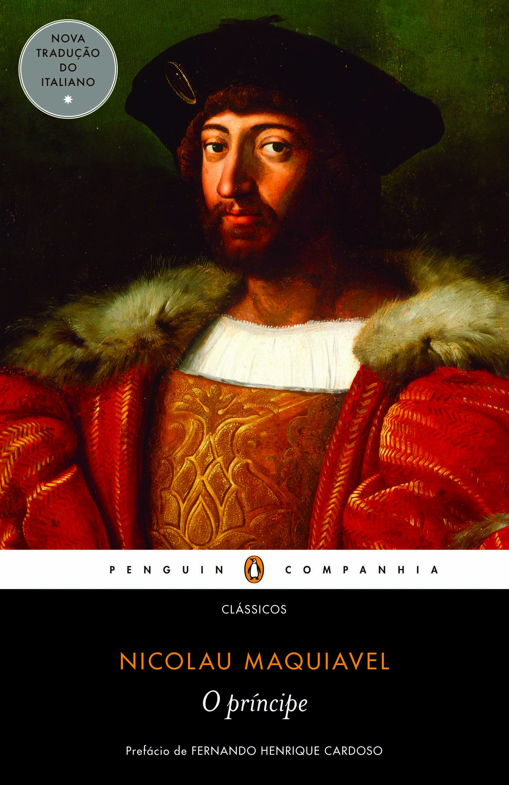

Os filósofos
Dante Alighieri
A Divina Comédia é um poema de viés épico e teológico da literatura italiana e mundial, escrito por Dante Alighieri no século XIV e dividido em três partes: o Inferno, o Purgatório e o Paraíso.
O príncipe

O Príncipe é o livro mais famoso do escritor florentino Nicolau Maquiavel, terminado em 1513, sendo uma obra focada em liderança política e em como melhor trabalhar as habilidades de dominação.